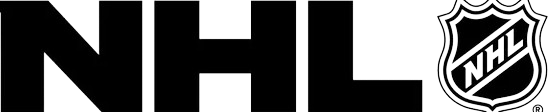
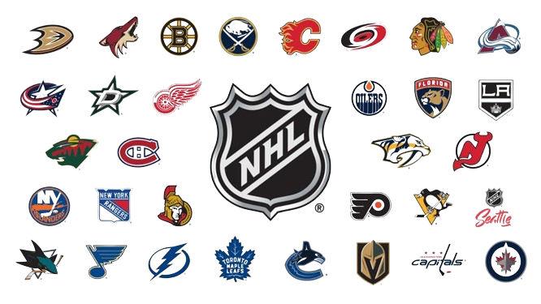
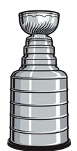

About the NHL
- The National Hockey League (NHL) is a professional ice hockey league in North America, comprising 32 teams, divided into two conferences: the Eastern Conference and the Western Conference.
- The NHL is widely considered the premier professional ice hockey league in the world and is known for its fast-paced, physical style of play.
- Founded on November 26, 1917, in Montreal, Quebec, Canada, the NHL has a rich history and tradition spanning over a century.
- The NHL season typically runs from October to April, followed by playoffs leading to the Stanley Cup Finals, where the champions are determined.
Teams
- The NHL consists of 32 teams, evenly divided between the Eastern Conference and the Western Conference. Each team represents a different city or region across North America.
- Some of the most storied franchises in NHL history include the Montreal Canadiens, Toronto Maple Leafs, Detroit Red Wings, New York Rangers, and Boston Bruins.
- Each team has its own unique history, traditions, and fanbase, contributing to the rich tapestry of the NHL.
Players
- The NHL has been home to some of the greatest ice hockey players of all time, including Wayne Gretzky, Bobby Orr, Mario Lemieux, Gordie Howe, and Sidney Crosby.
- These players have achieved remarkable success on the ice, setting records, winning championships, and captivating audiences with their skill and athleticism.
- Whether it's the goal-scoring prowess of Alex Ovechkin, the playmaking ability of Wayne Gretzky, or the goaltending brilliance of Martin Brodeur, NHL history is filled with unforgettable moments courtesy of its legendary players.
Stanley Cup


- The Stanley Cup is the championship trophy awarded annually to the winner of the NHL playoffs. It is one of the oldest and most prestigious trophies in professional sports.
- The Stanley Cup Finals is a best-of-seven series between the champions of the Eastern Conference and the Western Conference, with the winner hoisting the Stanley Cup.
- Some of the most memorable moments in NHL history have occurred during the Stanley Cup Finals, including overtime goals, dramatic comebacks, and legendary performances.
NHL Draft
- The NHL Draft is an annual event where NHL teams select eligible amateur players to join their organizations. It serves as a crucial mechanism for teams to acquire young talent and build for the future.
- Prospective players eligible for the NHL Draft include amateur players from junior hockey leagues, collegiate programs, and international leagues. The draft order is determined by a combination of lottery selections and team performance in the previous season.
- The NHL Draft consists of multiple rounds, with each team having the opportunity to select players in each round. Teams evaluate and scout potential prospects extensively leading up to the draft, seeking to identify players who can contribute to their organizations.
- For many young hockey players, being selected in the NHL Draft is a lifelong dream come true and marks the beginning of their journey to the professional ranks.
NHL Winter Classic
- The NHL Winter Classic is an annual outdoor hockey game held by the NHL, typically on or around New Year's Day. The Winter Classic showcases two NHL teams competing in an outdoor stadium, often in a unique and picturesque setting.
- The Winter Classic has become one of the marquee events on the NHL calendar, attracting large crowds and national television audiences. It celebrates the roots of hockey and allows fans to experience the game in a nostalgic outdoor setting.
- Over the years, the NHL Winter Classic has featured iconic matchups and memorable moments, with players competing in adverse weather conditions and under the open sky.
- The Winter Classic has helped to grow the popularity of outdoor hockey and has become a cherished tradition for NHL fans across North America.